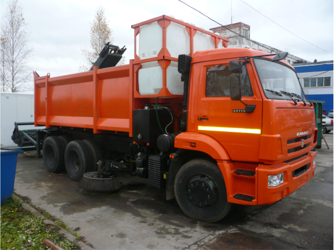
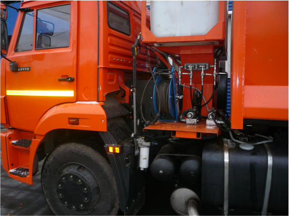

Подметально-уборочная машина МПУ
Машина подметально-уборочная (МПУ) со съемным оборудованием ОПУС вобрала в себя достижения дорожного машиностроение сохранив доступную цену, простоту управления и обслуживания. Техника, имеющая богатое оснащение, приспособлена для эффективной круглогодичной работы в любых погодных условиях.
Машина является альтернативой оборудованию типа БРОДВЕЙ по производительности и универсальности, машине типа ПУМ - по компактности, неприхотливости и цене, вакуумным МВП - по эффективности пылеподавления.
Применение усиленной коробки отбора мощности, современной гидравлики и передовых конструкторских решений, направленных на снижение непроизводительных потерь мощности, позволило обеспечить эффективность машины: высокую производительность, всепогодность, многофункциональность, разумную цену приобретения и обслуживания техники.


Машина является альтернативой оборудованию типа БРОДВЕЙ по производительности и универсальности, машине типа ПУМ - по компактности, неприхотливости и цене, вакуумным МВП - по эффективности пылеподавления.
Применение усиленной коробки отбора мощности, современной гидравлики и передовых конструкторских решений, направленных на снижение непроизводительных потерь мощности, позволило обеспечить эффективность машины: высокую производительность, всепогодность, многофункциональность, разумную цену приобретения и обслуживания техники.
В машине используются высококачественные узлы, материалы и современные инженерные решения. Компоновка машины аналогична ПУМ. Для увеличения объема вывозимого смёта установлен специальный съемный задний борт. В отличие от прицепного оборудования, имеющего чрезмерную длину, нуждающегося в дополнительном автономном двигателе и требующего оператора с водительской категорией "Е", примененное оборудование является съемным и размещается на кузове самосвала. Универсальность машины состоит в том, что оборудование может быть быстро установлено и демонтировано за счет применения быстроразъёмных соединений (БРС).
Для эффективного пылеподавления при круглогодичной эксплуатации разработана система экранов и фартуков, блокирующих пыль внутри контура рабочего органа, применен высоконапорный водяной насос пылеподавления. Использование высокого напора позволило в несколько раз снизить расход воды, одновременно повысив эффективность и качество пылеподавления в течение длительной работы. Использование специального водяного насоса, который может работать зимой (с солевыми растворами), позволяет задействовать систему пылеподавления круглогодично. Применение в зимний период пучковых щеточных дисков рабочего органа предотвращает налипание снега и образование на поверхности щетки корки льда.
Машина оснащена вместительными баками для воды и водяным пистолетом с инерционной катушкой, что позволяет расширить сферу применения оборудования, например, мыть объекты улично-дорожной сети или очищать машину и оборудование после рабочей смены.
Для повышения надежности разработаны система контроля рабочих параметров оборудования, отсекатель гидравлического масла (при обрывах РВД), устройство коррекции температуры гидравлического масла (подогрев или охлаждение), видеоконтроль, подсветка рабочих зон и современный пульт управления.
Будучи в своей основе самосвалом с мощной гидроподготовкой, машина может укомплектовываться сменным быстросъемным оборудованием для выполнения широкого круга дорожных работ. Например, на машину можно установить распределитель реагентов, бочку с поливомоечным оборудованием, термобункер для асфальта, снежный отвал, щетку и многое другое.
Для эффективного пылеподавления при круглогодичной эксплуатации разработана система экранов и фартуков, блокирующих пыль внутри контура рабочего органа, применен высоконапорный водяной насос пылеподавления. Использование высокого напора позволило в несколько раз снизить расход воды, одновременно повысив эффективность и качество пылеподавления в течение длительной работы. Использование специального водяного насоса, который может работать зимой (с солевыми растворами), позволяет задействовать систему пылеподавления круглогодично. Применение в зимний период пучковых щеточных дисков рабочего органа предотвращает налипание снега и образование на поверхности щетки корки льда.
Машина оснащена вместительными баками для воды и водяным пистолетом с инерционной катушкой, что позволяет расширить сферу применения оборудования, например, мыть объекты улично-дорожной сети или очищать машину и оборудование после рабочей смены.
Для повышения надежности разработаны система контроля рабочих параметров оборудования, отсекатель гидравлического масла (при обрывах РВД), устройство коррекции температуры гидравлического масла (подогрев или охлаждение), видеоконтроль, подсветка рабочих зон и современный пульт управления.
Будучи в своей основе самосвалом с мощной гидроподготовкой, машина может укомплектовываться сменным быстросъемным оборудованием для выполнения широкого круга дорожных работ. Например, на машину можно установить распределитель реагентов, бочку с поливомоечным оборудованием, термобункер для асфальта, снежный отвал, щетку и многое другое.